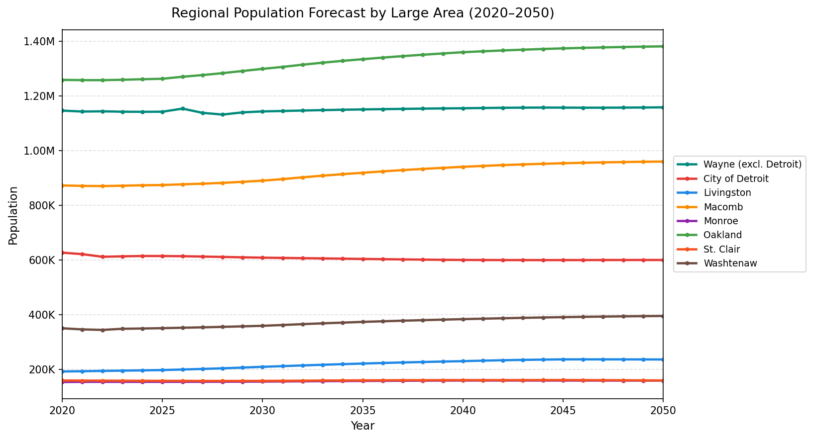
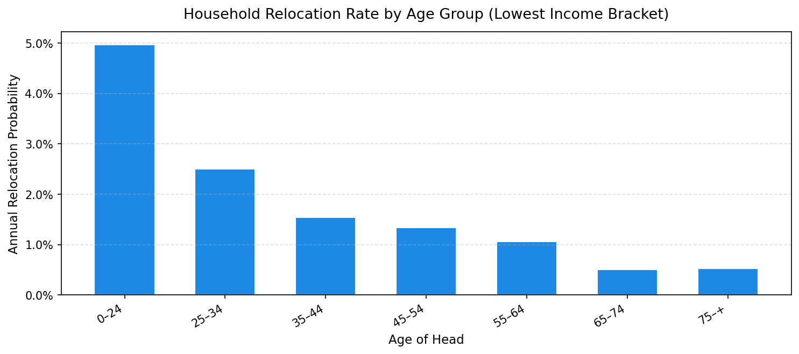

Demographics¶
Primary sources: Population synthesis outputs, REMI model exports, ACS data, rate tables (CSV/Excel)
This domain covers the base-year synthetic population (households, persons, group quarters), annual household growth control totals from REMI, block group household trend data from ACS, and supporting rate and target tables.
Tables in This Domain¶
| Table | Description | Source |
|---|---|---|
households |
Base-year synthetic households, placed in buildings | Population synthesis + placement |
persons |
All individuals linked to households | Population synthesis |
annual_household_control_totals |
Target HH counts by segment × year | Forecast controls pipeline |
remi_pop_total |
Total population by large area × year | Derived from REMI data (prepared separately from the controls pipeline) |
annual_relocation_rates_for_households |
Household relocation probability by age/income | Excel rate table |
income_growth_rates |
Annual income growth by large area | CSV |
target_vacancies |
Target residential vacancy rates by large area × year | Excel |
target_vacancies_mcd |
City-level residential vacancy targets | Excel |
mcd_total |
Target household counts by MCD × year | Forecast controls pipeline |
bg_hh_increase |
Block group occupied housing unit trend (ACS) | ACS CSV |
group_quarters |
Group quarters persons, assigned to GQ buildings | GQ synthesis |
group_quarters_households |
GQ facility-level aggregate | GQ synthesis |
group_quarters_control_totals |
Target GQ population by city × year | CSV |
Households & Persons¶
households¶
Base-year synthetic household table. Generated by PopulationSim and placed into buildings using a stable-marriage matching algorithm that aligns synthesized households to building assessor records at the block group level. Matching is based on shared attributes including building type, number of units, market value / housing cost, year built, and tenure.
Index: household_id (unique)
| Column | Type | Rules | Notes |
|---|---|---|---|
household_id |
int32 | unique, no null | |
building_id |
int32 | join → buildings, no null |
Placement result; -1 = unplaced |
persons |
int8 | range [1–20], no null | Household size |
workers |
int8 | range [0–18], no null | Employed workers |
age_of_head |
int8 | range [15–100], no null | Age of head |
income |
float64 | no null | Annual income ($); negatives set to 0 |
children |
int8 | range [0–14], no null | Children under 18 |
cars |
int8 | values: 0–6 | Vehicle count |
race_id |
int8 | values: 1,2,3,4 | 1=White, 2=Black, 3=Asian, 4=Other |
Common issues:
- workers > persons — invalid combination; flag in synthesis output
- building_id = -1 — unplaced households; should be a small fraction of total; investigate large unplaced counts
- Negative income — set to 0 in the build pipeline (intentional)
- Total household count should be consistent with the base year annual_household_control_totals
persons¶
All individuals in base-year synthetic households. One row per person.
Index: person_id (unique)
| Column | Type | Rules | Notes |
|---|---|---|---|
person_id |
int32 | unique, no null | |
household_id |
int32 | join → households, no null |
|
age |
int8 | range [0–94], no null | |
sex |
int8 | values: 1, 2 | 1=male, 2=female |
race_id |
int8 | values: 1,2,3,4 | |
worker |
int8 | values: 0, 1 | 1=employed |
relate |
int8 | values: 0–15 | Relationship to head (ACS codes); 0=head |
member_id |
int8 | range [1–20], no null | Position in household (1=head) |
industry |
int8 | no null | Aggregated NAICS industry |
school_grade |
int8 | no null | Enrolled grade; -1=not enrolled |
Common issues:
- Persons with household_id not in households — orphaned persons; drop or investigate
- Each household should have exactly one relate = 0 (the head)
- Row count of persons should be consistent with the sum of households.persons
Control Totals & Population Forecasts¶
Household control total pipeline — how REMI flows into the simulation:
flowchart LR
REMI[REMI Population\nForecast] --> FCP[Forecast Controls\nPipeline]
FCP --> HHC[annual_household_\ncontrol_totals]
REMI --> RT[remi_pop_total]
HHC --> T1[households_transition\nstep]
RT --> T2[gq_pop_scaling\nstep]MCD sampling pipeline — how city-level growth targets and block group trends feed the housing unit sampler:
flowchart LR
REMI[REMI County\nForecast] --> MCD_PROC[MCD Projection\nProcess]
HIST[Historical MCD\nGrowth Trends] --> MCD_PROC
MCD_PROC --> MCD[mcd_total]
ACS[ACS Block Group\nOccupancy Data] --> BGH[bg_hh_increase]
MCD --> T2[mcd_hu_sampling\nstep]
BGH --> T2annual_household_control_totals¶
Drives how many households exist in each large area × demographic segment each year. The most critical table for forecast outcomes.
Index: year
Generated by: A forecast controls pipeline that converts REMI population exports into segmented household targets by large area and demographic category.
Columns:
| Column | Type | Allowed Values | Notes |
|---|---|---|---|
year |
int16 | must cover all forecast years | Index |
large_area_id |
int16 | 8 valid codes | One of the 8 modeling zones |
age_of_head_min/max |
int8 | bracket bounds | -1 = open-ended upper bound |
persons_min/max |
int8 | bracket bounds | |
workers_min/max |
int8 | bracket bounds | |
income_min/max |
int32 | bracket bounds | |
children_min/max |
int8 | bracket bounds | |
cars_min/max |
int8 | bracket bounds | |
race_id |
int8 | 1,2,3,4 | |
total_number_of_households |
int16 | no null | Target HH count for this segment × year |
The -1 sentinel in _max columns means "no upper bound" (open-ended bracket). For example, age_of_head_max = -1 means "65 and older."
Sample rows (year 2021, different segments):
| year | large_area_id | race_id | age_of_head_min | age_of_head_max | persons_min | persons_max | children_min | children_max | cars_min | cars_max | workers_min | workers_max | income_min | income_max | total_number_of_households |
|---|---|---|---|---|---|---|---|---|---|---|---|---|---|---|---|
| 2021 | 3 | 1 | 65 | -1 | 1 | 1 | 0 | 0 | 1 | 1 | 0 | 0 | 0 | 31704 | 16,260 |
| 2021 | 125 | 1 | 35 | 64 | 2 | 2 | 0 | 0 | 2 | 2 | 2 | 2 | 113,183 | 1,534,131 | 13,977 |
| 2021 | 5 | 2 | 35 | 64 | 1 | 1 | 0 | 0 | 0 | 0 | 0 | 0 | 0 | 31704 | 12,052 |
Row 1 shows a senior single-person household (age 65+, -1 = open-ended upper bound) in Wayne County excluding Detroit. Row 2 shows a high-income two-worker couple in Oakland County. Row 3 shows a zero-car, low-income single person in the City of Detroit. Each row defines one demographic segment for one year — the same segments repeat for every forecast year with updated targets.
The model matches households to segments by checking that all bracket columns are satisfied simultaneously.
Common issues:
- Missing years — all forecast years must be present; the simulation skips growth for any missing year
- Segment totals should sum to plausible regional totals — cross-check against remi_pop_total
- All 8 large areas must have rows for every forecast year
remi_pop_total¶
Total population by large area × year, directly from REMI. Used to calibrate household control totals and as a model input for population scaling.
Index: large_area_id
Structure: 8 rows × year columns (one column per simulation year)
| Column | Type | Notes |
|---|---|---|
large_area_id |
int16 | Row index — 8 valid codes |
| one column per year | int32 | Total population including group quarters |
Update procedure: This table is prepared separately from the household controls pipeline. The forecast controls pipeline (Step 1) produces a more detailed file with age group, race, and gender breakdowns used to generate annual_household_control_totals. remi_pop_total is a simpler aggregate — total population by large area × year — summarized from the same REMI county-level forecasts and saved as a standalone CSV. Update it alongside the controls pipeline using the same REMI run.

Sample rows (all 8 large areas, selected years):
| large_area_id | 2020 | 2025 | 2030 | 2040 | 2050 |
|---|---|---|---|---|---|
| 3 (Wayne excl. Detroit) | 1,145,697 | 1,141,715 | 1,142,739 | 1,154,307 | 1,157,605 |
| 5 (City of Detroit) | 626,338 | 613,978 | 607,963 | 599,633 | 599,456 |
| 93 (Livingston) | 191,852 | 196,993 | 208,812 | 229,535 | 235,618 |
| 99 (Macomb) | 872,060 | 873,599 | 889,572 | 940,134 | 959,494 |
| 115 (Monroe) | 153,348 | 153,972 | 154,923 | 158,680 | 158,339 |
| 125 (Oakland) | 1,258,094 | 1,262,139 | 1,298,338 | 1,359,254 | 1,380,592 |
| 147 (St. Clair) | 158,786 | 157,594 | 157,401 | 160,230 | 158,960 |
| 161 (Washtenaw) | 349,733 | 350,159 | 358,807 | 383,115 | 394,662 |
Common issues: - Missing large areas — all 8 must be present - Year columns must cover the full simulation range
mcd_total¶
Target household counts by MCD × year. Used by the mcd_hu_sampling model step to control city-level household growth.
Index: mcd (SEMMCD code)
Structure: One row per MCD, year columns
Derived from: A separate MCD projection process that combines historical MCD household growth trends with REMI county-level forecasts as constraints. MCD-level 5-year benchmarks are developed independently and then interpolated to annual values.
Sample rows — growing, stable, and declining MCDs (selected years):
| mcd | 2020 | 2025 | 2030 | 2040 | 2050 |
|---|---|---|---|---|---|
| 3060 | 31,543 | 33,044 | 35,704 | 38,658 | 39,133 |
| 2040 | 16,788 | 16,858 | 17,013 | 17,131 | 17,264 |
| 5 | 254,275 | 251,513 | 250,539 | 248,911 | 251,519 |
| 1115 | 15,614 | 15,468 | 15,487 | 15,439 | 15,171 |
Common issues: - All MCDs in the region (238 rows) must be present - Year columns must cover the full simulation range
Rate & Target Tables¶
annual_relocation_rates_for_households¶
Probability of a household relocating in a given year, by age of head and income bracket.
Index: Row integer (no named index)
| Column | Type | Allowed Values |
|---|---|---|
age_min/max |
int8 | age bracket bounds; -1=open-ended |
income_min/max |
int32 | income bracket bounds; -1=open-ended |
probability_of_relocating |
float32 | range [0–1], no null |

Sample rows — one row per age group (lowest income bracket), showing how relocation probability declines with age:
| age_min | age_max | income_min | income_max | probability_of_relocating |
|---|---|---|---|---|
| 0 | 24 | 0 | 9,999 | 0.0497 |
| 25 | 34 | 0 | 9,999 | 0.0250 |
| 35 | 44 | 0 | 9,999 | 0.0154 |
| 45 | 54 | 0 | 9,999 | 0.0134 |
| 55 | 64 | 0 | 9,999 | 0.0106 |
Note: In the simulation this rate is scaled by 0.2 (only 20% of households flagged as potential movers actually relocate). Brackets must be exhaustive — every age/income combination a household could have must fall into exactly one row.
income_growth_rates¶
Annual income growth multiplier by large area × year. One row per year, one column per large area.
Index: year
Common issues: - All 8 large areas must have a column - Must cover all forecast years
target_vacancies¶
Target residential and non-residential vacancy rates by large area × year. Used by the developer model to determine how much new construction to generate.
| Column | Type | Notes |
|---|---|---|
large_area_id |
int16 | 8 valid codes |
year |
int16 | All forecast years |
res_target_vacancy_rate |
float32 | e.g., 0.05 = 5% |
non_res_target_vacancy_rate |
float32 |
target_vacancies_mcd¶
City-level residential vacancy targets. Takes precedence over large area targets when both are present.
Index: cityid
Note on naming: This table's index is literally named
cityid(no underscore), unlikecity_idused in other tables. The value follows the same convention — equalssemmcdoutside Detroit, neighborhood code inside Detroit. See the Glossary.
| Column | Notes |
|---|---|
cityid |
Index — MCD or Detroit neighborhood code |
cityname |
Municipality name (informational) |
| one column per year | float — target residential vacancy rate |
bg_hh_increase¶
Block group occupied housing unit counts from ACS, for two reference periods. Used by the mcd_hu_sampling model step to detect neighborhood-level housing demand trends and distribute city-level household growth sub-city.
Index: GEOID (Census block group GEOID)
| Column | Type | Notes |
|---|---|---|
GEOID |
int64 | Census block group GEOID — unique index |
OccupiedHU19 |
int32 | Occupied housing units, 2019 ACS |
OccupiedHU14 |
int32 | Occupied housing units, 2014 ACS |
Update: Pull occupied housing unit counts from ACS (5-year estimates) for all block groups in the 7-county region. The model uses the difference between the two periods to estimate recent trend direction — blocks with growing occupancy attract more new households; declining blocks attract fewer. Update both the earlier and the later reference year when starting a new forecast cycle to reflect recent conditions.
Common issues:
- Missing block groups — all block groups in the model region should be present
- GEOID must be integer (leading zeros removed); verify dtype after loading
- Block groups that were split or merged between ACS vintages need to be resolved before use
Group Quarters¶
group_quarters¶
Group quarters persons — one row per person living in a non-household arrangement (dormitory, nursing home, prison, military barracks). Tracked separately from regular households; not subject to HLCM.
Index: personid (unique)
| Column | Type | Allowed Values | Notes |
|---|---|---|---|
personid |
int32 | unique, no null | |
building_id |
int32 | join → buildings, no null |
GQ facility building |
gq_code |
int16 | 101,201,301,401,501,701,789 | GQ type (see below) |
age |
int8 | no null | |
race_id |
int8 | 1,2,3,4 | |
type |
object | — | GQ type label |
GQ type codes:
| Code | Type |
|---|---|
| 101 | College/University dormitory |
| 201 | Military quarters |
| 301 | Correctional facilities |
| 401 | Nursing/assisted living |
| 501 | Other institutional |
| 701 | Other non-institutional |
| 789 | Other/unknown |
group_quarters_households¶
Facility-level GQ aggregate — one row per GQ building.
Index: household_id
| Column | Notes |
|---|---|
building_id |
GQ facility building; must exist in buildings |
persons |
Total GQ persons in this facility |
gq_code |
GQ type |
city_id |
MCD (= semmcd outside Detroit; neighborhood id inside Detroit) |
large_area_id |
Large area |
group_quarters_control_totals¶
Target GQ population counts by city × year. Used by gq_pop_scaling_model to scale GQ population each simulation year.
Index: city_id ¹
¹
city_idnaming note: This column equalssemmcd(the official MCD code) everywhere except the City of Detroit, where it identifies a neighborhood. This is a legacy convention — see the Glossary for the full explanation.
| Column | Type | Rules |
|---|---|---|
city_id |
int32 | no null |
count |
int32 | no null |
year |
int16 | range covers all forecast years, no null |
Common issues:
- All cities with GQ populations must have rows for every forecast year
- city_id values must match those in semmcds (or Detroit neighborhood codes)
Update Checklist (New Forecast Cycle)¶
- [ ] Get new REMI population export by large area × age × gender; run forecast controls pipeline to produce
annual_household_control_totals - [ ] Update
remi_pop_totalwith new REMI population totals by large area × year - [ ] Update
mcd_totalvia the separate MCD projection process (historical growth trends + REMI county forecasts → 5-year benchmarks → annual interpolation) - [ ] Review and update vacancy rate tables if market conditions warrant
- [ ] Update GQ control totals and re-run GQ synthesis if base year changes
- [ ] Update
bg_hh_increasewith fresh ACS occupied housing unit data for the new base period - [ ] Confirm all forecast years have rows in
annual_household_control_totalsfor all 8 large areas - [ ] Confirm
mcd_totalcovers all 238 MCDs × all forecast years - [ ] Confirm
remi_pop_totalhas all 8 large area rows and all forecast year columns - [ ] Confirm GQ
building_idvalues exist inbuildings